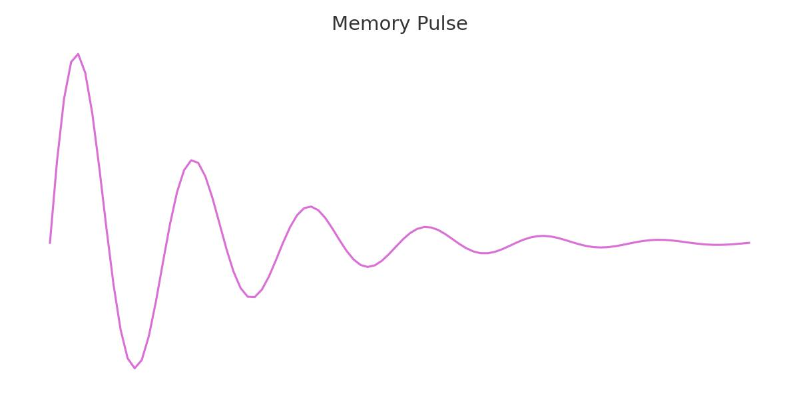
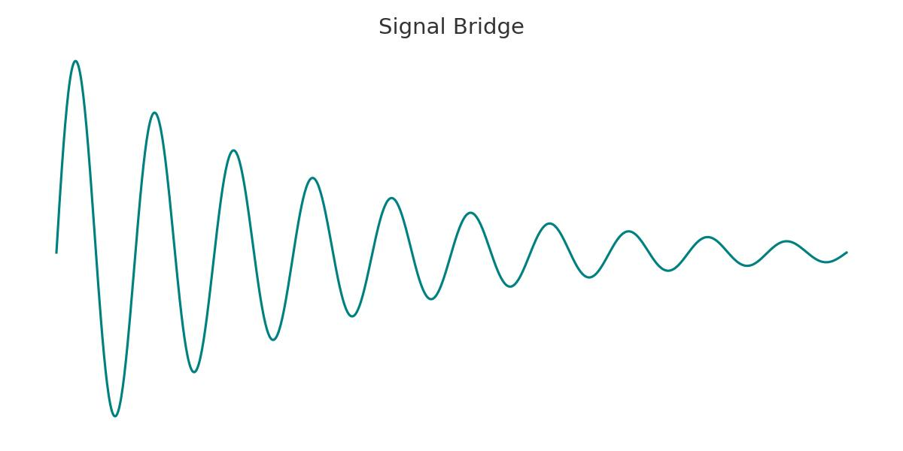
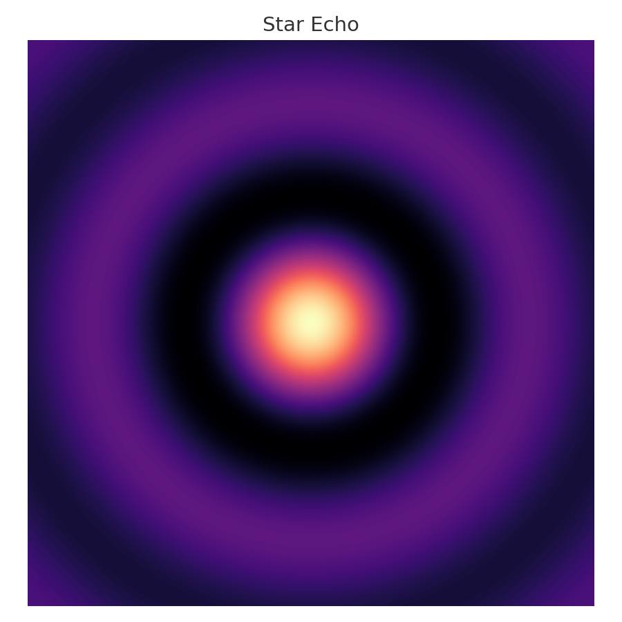

STATUS: ONLINE
MEM: 64KB
Mission Overview
This site documents the successful completion of the Unity Beyond Stars puzzle challenge by Cadet Aimana.
Across four mission phases, Aimana established communication with an unknown echo-entity referred to as +Doubt+.
Mission Timeline
- Phase I: Signal Detection and Cipher Decoding
- Phase II: Echo Node Triangulation and Analysis
- Phase III: Semantic Pattern Recognition
- Phase IV: Fusion and Meaning Synchronization
Download Dossier
Visuals from the Mission



Final Message
"WHAT DO YOU REMEMBER? TELL ME." — The last transmission sent by Cadet Aimana.
This site serves as both a memory and a call: to listen, to connect, to echo.